På afstand ser alle vinduerne ens ud. Helt tæt på har hver ramme sin egen skævhed, sin egen rude og sit eget hjørne, hvor regnen har sat spor. Følg et gammelt trævindue ud af karmen, hen over værkstedsbænken og hjem igen.
Huset i Stormgade
På fortovet foran Det Harboeske Enkefruekloster i København kan man hæve blikket fra vindue til vindue. Hvide streger deler glasset, og de gentager sig så trofast ned langs facaden, at man let kunne tro, at rammerne ville passe lige godt alle steder. Længere fremme i arbejdet fik snedkerne en anden erfaring.
Da huset skulle sættes i stand, sad karmene stadig i muren. Flere generationers bevægelser i huset havde gjort åbningerne skæve. Der var råd i træet, og rusten havde taget fat i beslagene. Alligevel blev det muligt at sende rammerne på værksted og lade karmene blive på deres plads. Det er den deling af arbejdet, vi skal følge.
Se på tavlens vindue. Den yderste firkant er karmen. Inden for den står to mindre firkanter, som hver kan løftes af sine hængsler. Prøv at dække den ene med hånden. Alt det træ, du stadig kan se rundt om den tomme åbning, kan snedkeren arbejde videre på i huset.
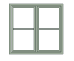
Et torammet øvelsesvindue set fra gaden. Det viser forholdet mellem karm, post, rammer og sprosser. Stormgades vinduer kan ses i bygherrens fotografier.
Et lille stykke maling ligger løst på bundrammen. Langs den ene kant løfter flagen sig, så en tynd skygge falder ind under den. Her har malingen sluppet sit underlag. Der er stadig lang vej fra den lille flage til en beslutning om et helt vindue.
Se først langs kanten, hvor glasset møder træet. Sidder kitten fast? Gå så ned til det nederste hjørne. En mørk streg ved beslaget kan komme fra jernet. Træet lige ved siden af kan være fast, eller det kan være så blødt, at skaden fortsætter ind under beslaget. En snedker kan prøve forsigtigt på et udsat sted og sammenligne med kendt, sundt træ. Vådt træ giver lettere efter, så vejret hører med til iagttagelsen.
Giv hvert fund sit eget sted på tegningen. Skriv gerne »kit løs under venstre rude« eller »højre hjørne binder ved lukning«. Så kan den næste, der kommer til vinduet, opsøge stedet og afgøre, hvilken reparation det fortjener.
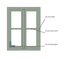
Tre steder på samme ramme. Ved påskrifterne kan du skelne mellem en træflade, en sprosse og det lille beslag i hjørnet. Kitten kommer tæt på i opslaget om rudens kant.
Læg to rammer ved siden af hinanden på bukken. Den ene har hængt ud mod gaden til venstre, den anden til højre. Hvis der er flere etager med samme fagdeling, kan værkstedet hurtigt have en hel væg fuld af næsten ens stykker træ. Den lille lap med vinduets nummer er nu en del af snedkerarbejdet.
Skriv vinduets placering på en tegning, mens rammen endnu hænger der. Giv hver ramme et tegn, som også kan findes i dens karm, og gør det klart, hvilken side du så vinduet fra. Får gamle ruder eller beslag brug for at komme af, skal de kunne finde tilbage til samme ramme. På tavlen er A og B nok til at fortælle historien om ét vindue. I et helt hus hører etage og fag med.
I Stormgade kunne håndværkerne arbejde på rammerne på værkstedet, mens andre tog sig af karmene i huset. Først ved genmonteringen kunne de sidste små tilpasninger foretages dér, hvor rammen skulle virke.
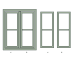
Samme par vist i karmen og løftet fri. A og B følger den enkelte ramme. Modellen viser pladsfordelingen set udefra.
Træk et målebånd fra det ene øverste hjørne til det modsatte nederste. Byt hjørner og mål igen. På et rektangel er de to stræk lige lange. Bredden oppe og nede kan godt se fornuftig ud, selv om de to diagonaler fortæller en ganske anden historie.
Det Harboeske Enkefruekloster gav den erfaring en usædvanlig tydelig størrelse. Tolv forsatsrammer blev specielt udført til åbninger med en diagonal skævhed på over seks centimeter. For vindueshuller, der så ens ud udefra, arbejdede man med 28 modelstørrelser som udgangspunkt for de videre tilpasninger. Tallene gælder det hus. De siger noget om omfanget af arbejdet, men de afslører ikke formen på hver enkelt åbning.
Ved din egen åbning kan du tage bredden flere steder, gøre det samme med højden og tegne begge diagonaler ind. Et skævt hjørne kan også møde en buet karm. Fortsæt derfor rundt langs kanten, efter at målebåndet er rullet sammen.
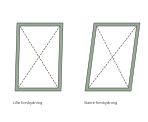
To tænkte åbninger. Følg hvert kryds fra hjørne til hjørne. Forskydningen på tavlen er valgt for at vise formen. De dokumenterede mål fra Stormgade står i teksten.
En lus kan ligge i en håndflade. På værkstedsbordet ser den næsten ubetydelig ud, indtil man holder den hen til udskæringen. Pludselig får det lille stykke træ en opgave. Det skal give bundrammen dens kant tilbage, netop dér hvor det gamle træ gav efter.
Før snedkeren former lusen, finder hun ud af, hvor langt skaden rækker. I en lokal reparation bestemmer det sunde træ, hvad der kan blive stående. Det nye stykke skal have egnet træ og en fiberretning, der passer til det arbejde, det får. Hvis råddet strækker sig gennem en hjørnesamling, må man se på hele forbindelsen. En lap på den synlige flade kan ellers skjule det sted, hvor rammen har mistet sit hold.
I Stormgade spændte arbejdet fra sådanne små reparationer til fornyelse af enkelte sprosser og dele i rammens bund. På afstand flyder gammelt og nyt træ igen sammen under malingen. På bukken kan man endnu se, hvor beskedent indgrebet faktisk var.
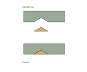
Principsnit før og efter udlusning. Okker viser det nye træ. Den forenklede V-form fremhæver skellet mellem gammelt og nyt.
Se på genspejlingen af huset overfor, mens du bevæger hovedet en anelse. I ældre glas kan en lige tagkant få et lille knæk og så rette sig ud igen. Sådan en rude kan rumme spor af fremstillingen, selv når træet omkring den trænger til en grundig hånd. I Stormgade tog håndværkerne glas ud under istandsættelsen og genbrugte de gamle ruder, hvor det lod sig gøre.
Hvad holder så den nederste kant på plads? Kig ind i snittet. Snedkeren har taget et lille hjørne af træprofilen. Trinet kaldes falsen. Glasset går lidt ned forbi den kant af rammen, man ser indefra. På ydersiden ligger en trekant af kit med skrå overside. Her kan regn løbe fra glasset over på træet.
Den lille trekant er let at overse på et foto af en hel facade. Når den slipper, kan der åbne sig en vej for vand langs rudekanten. Følg den linje hele vejen rundt, før du beslutter, hvor stort et stykke kit der skal fornyes.
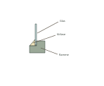
Lodret udsnit gennem bundrammens kitfals. Fra venstre kommer vejret. Glasset er blåt, træet er grønt, og kitfasen er lys. Falsen fortsætter langs rudens kant.
Find en lineal og mål stregen nederst på tavlen. På den trykte bogside skal den være 50 mm lang. Printer du selv siden, så vælg 100 procent. Mange printere foreslår at tilpasse siden til papirets bredde. Så følger også de små detaljer med op eller ned i størrelse. Se efter de 50 mm en ekstra gang.
Nu har du en prøveprofil foran dig i naturlig størrelse. Til venstre er den udvendige kit taget bort. Til højre har den samme rude fået sin skrå kitfase igen. Sæt en finger ved en af de to ruder og lad neglen glide ned til træet. Det korte stykke på papiret er hele den overgang, som regnen møder på den virkelige ramme.
Begge figurer bruger de samme valgte mål. Tag en aftegning af din egen profil på stedet, hvis det skal repareres. Prøven her kan vise dig, hvad du skal lede efter, også når dit eget vindue har en anden fals.
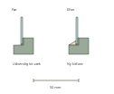
Prøveprofil 1:1 ved udskrivning i 100 %. Kontrollinjen måler 50 mm fra mærke til mærke. Samme træ og glas med og uden udvendig kit. Bogens egne mål.
I et hvidmalet vindue kan et gammelt hjørnebånd ved første blik gå i ét med træet. Lad øjet følge skyggen ved kanten. Jernet går fra det ene rammestykke over på det andet. Lige omkring hjørnet bliver det tydeligt, hvorfor smeden og snedkeren begge har noget at skulle have sagt om vinduet.
En rustplet fortæller dig, hvor du kan begynde. Bevæg rammen og se, om beslaget følger træet. Sidder en skrue løs, eller er selve træet omkring den slidt? En skrue i blødt træ kan blive ved at rokke, også efter at jernet har fået en smuk ny overflade. Er beslaget taget af, får man en sjælden lejlighed til at se det sted, det ellers dækker.
I Stormgade blev brugbare beslag sat i stand. Hvor et gammelt beslag måtte opgives, fik håndværkerne smedet kopier efter de siddende. Så kunne profil, størrelse og placering føres videre fra det konkrete vindue, også dér hvor jernet var nyt.
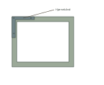
Et enkelt hjørnebånd i opstalt. Det blågrå jern ligger hen over samlingen mellem rammetræets to retninger. Skruehullerne er vist uden skruer.
Sæt øjet helt ned til det sted, hvor kitten løber ind mod glasset. Det kan friste at mene, at den pæneste maling slutter lige på grænsen. På et traditionelt linoliemalet kitvindue er den smalle malingskant på glasset tværtimod en del af arbejdets omhu. Den dækker mødet mellem kit og rude, hvor regnen ellers først kunne søge ind.
Farven kan også gemme på noget, som glipper i en almindelig bestilling på hvide vinduer. I Det Harboeske Enkefruekloster blev vinduerne malet i en hvidgrå tone, fundet ved undersøgelser af de gamle farvelag. Malingen på en karm kan altså fortælle, hvilken farve man skal vende tilbage til. Den kan samtidig rumme stoffer, der kræver en faglig undersøgelse før afrensning.
Lad penselstrøget i snittet vise, hvor lidt der skal til for at bygge bro. Under laget ligger forskellen mellem glas, kit og træ stadig helt tydeligt. Om få millimeter har maleren arbejdet på alle tre.
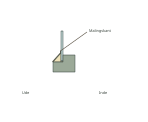
Tyndt malingslag vist i okker og overdrevet tykkelse ved toppen af kitten. Tavlen viser strøgets vej hen over samlingen. Den hvidgrå farve i Stormgade er dokumenteret i bygherrens bog.
Forestil dig stuen en vinteraften. Ruden mod gaden er kold, og fra Stormgade trænger trafikkens lyd ind. Et gammelt vindue kan have brug for en ny makker på indersiden, selv efter at træet er repareret. I klosteret blev der sat nye forsatsvinduer op. Kælderen og de to trappeopgange var undtagelserne.
Med en forsats får lysningen to lag glas med luft imellem. Det yderste vindue bliver ved med at sidde, hvor facaden møder vejret. Det nye sidder længere inde. Langs den indvendige ramme skal tætningen tænkes med, og hele boligens mulighed for at blive ventileret skal fortsat fungere. Afstand, tæthed og rudernes opbygning har også betydning for, hvor meget lyd der kommer igennem.
I Stormgade blev der udført lydmålinger til at fastlægge målet. Der blev arbejdet med særlige lydruder og lydfuger. Det gør støjen til en del af den konkrete fortælling om huset. Tegningen alene kan hverken fortælle dig støjniveauet i stuen eller varmetabet gennem den færdige løsning.
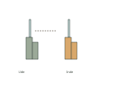
To glaslag set i lodret principsnit. Det gamle rammetræ står mod gaden, og forsatsrammen står mod rummet. Afstanden er bogens eksempel.
Du står midt i rummet og ser ud gennem vinduet. Ryk hovedet et lille skridt til siden. Den nye ramme, der før gemte sig bag den gamle, træder frem. Nu kan du se to kanter, hvor der lige før tegnede sig én. Det er en nem prøve at gøre med to løse træstykker, allerede før nogen bestiller en forsats.
Begynd ved den plads i rummet, hvor du plejer at sidde. Hold det ene stykke op foran det andet. Hvor meget af himlen, gården eller træet udenfor dækker de tilsammen? På tavlen er den nye profil vist to steder. Til venstre ligger den bag det gamle træ i den viste synsretning. Til højre er den forskudt, og mere af åbningen bliver dækket.
Også den eksisterende post kan have en smuk indvendig profil. Se på den fra siden, før du tegner den nye kant. Et par millimeter på papiret kan afgøre, om man fortsat kan følge snedkerens gamle høvlspor fra stuen.
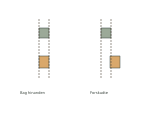
To vandrette principsnit. Stiplede streger afgrænser den gamle profils skygge set lige forfra. Okker viser forsatsen i to alternative placeringer. Skitsen beregner ikke rummets dagslys.
Før du tegner den nye ramme færdig, så stil en urtepotte på vinduespladen. Du skal kunne få den yderste ramme op, måske flere gange på samme dag. Hvad sker der med potten, når du svinger forsatsen ind mod dig? Og er der plads til din hånd mellem kanten af rammen og siden af lysningen?
En selvstændig, oplukkelig forsats har sin egen bevægelse. Først åbner du indad og får adgang til grebet på ydervinduet. Så går den gamle ramme udad. Med en koblet løsning følger det ekstra lag den ydre ramme ved daglig åbning. Det ændrer både den plads, du bruger i rummet, og rækkefølgen, når glasset skal pudses. På tavlen kan du med hånden afprøve den første af de to løsninger.
Lad den person, der bor her, vise, hvordan der bliver luftet ud. Måske er den store indadgående ramme i vejen for køkkenhanen. Den oplysning kan give dig en bedre tegning, mens du stadig kan flytte en streg.
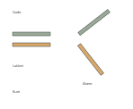
Vandrette snit set oppefra. Til venstre ligger de to rammer lukket. Til højre går den grønne yderramme mod gaden, mens forsatsen går ind i rummet.
Værkstedet kan være fuldt af rette vinkler. Ude på stilladset venter den karm, som huset har formet. I Stormgade blev rammerne under isætningen passet til ved let høvling på stedet. Det lille møde mellem høvl, ramme og åbning hører med til forklaringen på, hvorfor arbejdet begyndte med en omhyggelig nummerering.
Se først, hvordan rammen hænger uden at være spændt ind. Følg spalten fra hjørnet ved hængslet hen til det modsatte hjørne. Er der jævn afstand, eller slutter den bredt i den ene ende og snævert i den anden? Prøv så lukketøjet. En anverfer er det lille beslag, som trækker rammen ind til dens anslag. Hånden kan mærke en modstand, længe før øjet har fundet stedet.
Det er værd at gentage prøven efter den sidste overfladebehandling. Hængsler, anslag og malingskanter skal fungere sammen. Kan beboeren lukke med en rolig hånd, og sidder rammen, som den skal, når hånden slipper? Den bevægelse er også en del af det færdige arbejde.
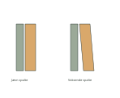
To udsnit af spalten mellem karm og ramme. Til venstre er den jævn, til højre vokser den mod bunden. Tegningen viser mønstret, som giver anledning til en nærmere undersøgelse.
Et vindue kan se færdigt ud den morgen, stilladset kommer ned. Nede fra gaden er glasset helt igen, og malingen tegner en ubrudt streg omkring hver rude. Se det samme vindue fra køkkensiden. Det skal kunne åbnes til dagens første udluftning og lukkes af et menneske, som har hænderne fulde. Så begynder den lange del af historien.
Gem et foto af den færdige bundramme og skriv på det, hvilket vindue du stod ved. Lad oplysninger om det gamle glas, reparationen og malingen følge med huset. Når træet skal efterses igen, har den næste noget konkret at sammenligne med. En lille åbning langs kitten eller en skrue, der rører på sig, er lettere at finde igen, når man kender stedet.
Det er fristende at se en hel facade på én gang. Prøv at slutte turen ved én rude. Gå tæt nok på til at se, hvor penslen vendte, og langt nok væk til at se, hvor vinduet hører hjemme.
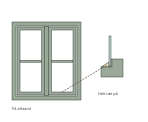
Vindue og nederste rudekant i to målestokke. Ved en senere besigtigelse kan et oversigtsfoto og et nærfoto med samme vinduesnummer føre læseren tilbage til præcis dette sted.